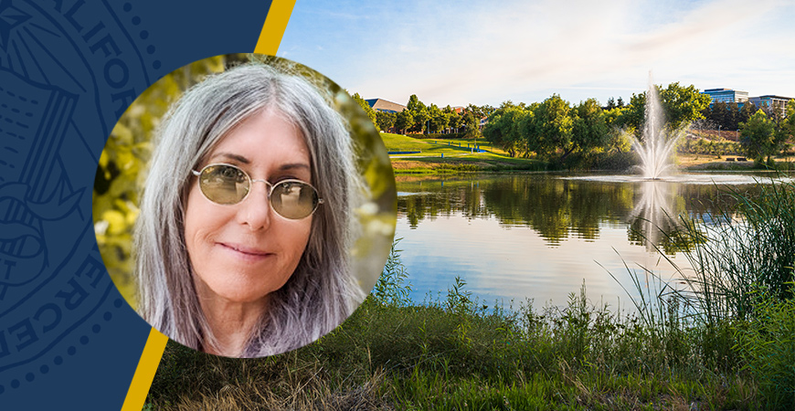
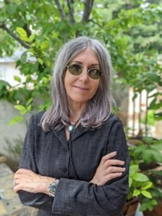

Teenie Matlock receives Athena Award at
CITRIS Women in Technology
Symposium
March 12, 2021
By Leigh Bernacchi
The 5th Annual Women in Tech Symposium on “The New Era in Human-Computer Interaction” held March 12, 2021 featured presentations of the fifth annual Athena Award winners. Sponsored by CITRIS and the Banatao Institute and Berkeley Engineering, the awards recognize those who embody, encourage, and promote the inclusion of women in technology.
Professor and Vice Provost for Academic Personnel, and McClatchy Chair in Communications at University of California, Merced, Dr. Teenie Matlock was presented with the Athena Award for Academic Leadership, recognizing a lifetime of professional achievements. Athena Academic Leaders transform not only the lives of individuals by creating opportunities and by mentoring but shape the structures within the university system to afford equity and full participation for all.
Before joining the UC Merced – the tenth and newest campus of the University of California – as Founding Faculty in 2004, she was a Research Associate at Stanford University and worked at IBM Research. Her groundbreaking research was at the heart of human-computer interaction, where she pioneered and patented early digital input devices. She has since published over 100 peer-reviewed articles spanning cognitive science, psychology, linguistics and human-computer interaction. She has served on several editorial boards, including Cognitive Science and Environmental Communication, as well as serving on the governing board of the Cognitive Science Society and on the National Institute of Health’s Language and Communication study section.
“Front and center, Mentoring, mentoring, mentoring.” Matlock’s remarks were filled with gratitude and focused on mentorship. Mentors of her past and how we can all be mentors today. She shared that as academic leadership means learning “how to build a good work culture, how to help others advance in their careers, and promoting diversity and inclusion.”
“I’m grateful to all the mentors I’ve had along the way,” Matlock said, starting with her first academic passion: playing trumpet. “Alberto Rodriguez would say, ‘Stop complaining, stop making excuses, and get to work.”
“My next mentor knew how to model good behavior that others would learn. She taught me how to give a good talk, be confident, and find a good research question.”
Finally, “many years later, J. Arthur Woodward, had been at UC over 25 years! There’s even a mentoring award named after him. He would ask, ‘What are you doing right now and why is it important to your own research and UC Merced?” Matlock attributes to the late Prof. Woodward her skill and dedication in creating new opportunities for others.
At UC Merced, “We’re seeing the benefits of mentoring. And we have lots to be proud of even though we’re young.”
She recommended “Get mentoring and be a mentor. And when you’re a mentor to others, look for diverse opportunities to mentor high school students and people early career. Mentor through showing and not just telling. And create a culture of mentoring. It’s important to technological innovation, sustainability, and health.”
Through CITRIS Seed Funding, Associate Director of CITRIS UCM, Prof. Erin Hestir is co-leading an underrepresented minorities in STEM mentorship program, pairing graduate and undergraduate students from Berkeley, Davis and Merced and fostering shared values and growing near-peer networks across the UC system. Applications will open on the citris.ucmerced.edu website for the first cohort this summer.
“I am humbled to present this award,” said Director of CITRIS UCM, Prof. Josh Viers. “In all the years I’ve been privileged to work with Teenie, I’ve observed her as an advocate and a leader in the academy, opening the gates for all to explore new frontiers.”
When Matlock began building UC Merced, she was returning home to the area. She serves in the Mariposa Community where she grew up. She has served as Vice Chair of the American Indian Council of Mariposa, and continues to engage in community activities with local Native American tribal groups, including her own, Southern Sierra Miwuk, to promote better educational opportunities and create bridges between the University of California and local indigenous peoples. Several years ago, she served on the systemwide President’s Advisory Council on Campus Climate, Culture and Inclusion. In addition to her scholarly and leadership activities, Matlock is a trumpet player, who performs with local jazz musicians.